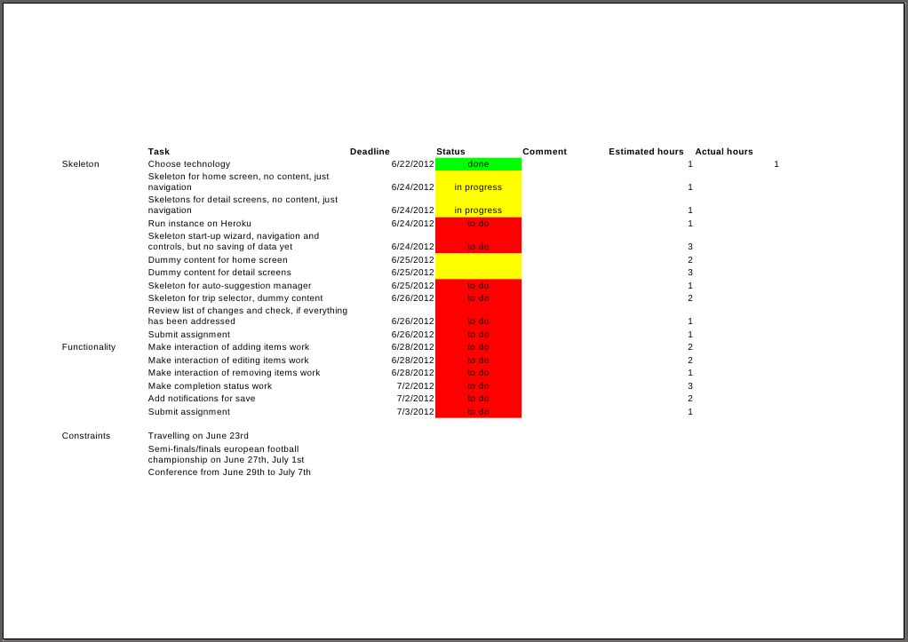
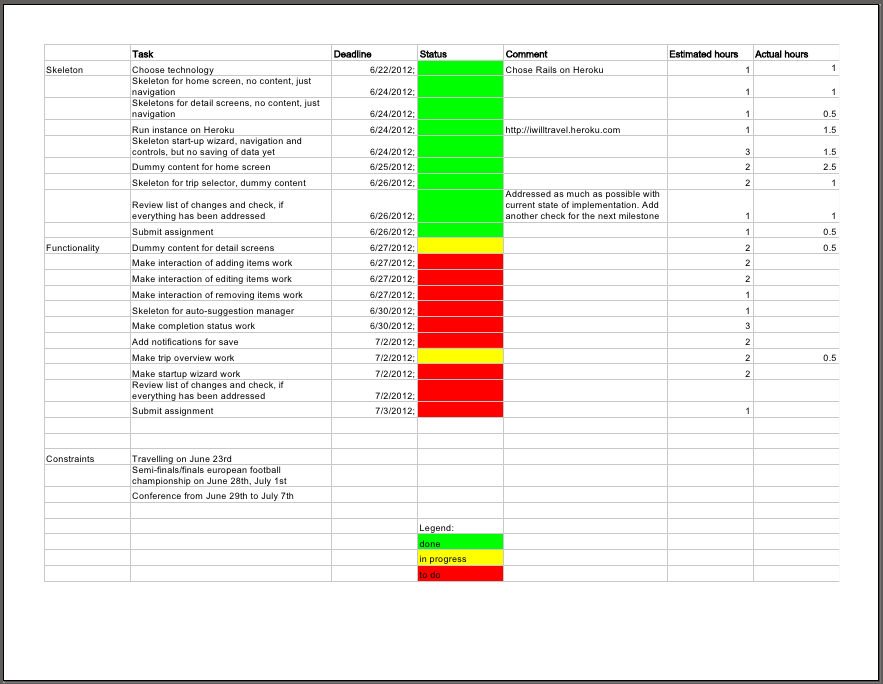

Start Building
Heuristic Evaluation
Feedback 1
# Heuristic Evaluation ## Prototype 1 * Control & freedom Severity: 4 Design only allows to create one trip. * Flexibility & efficiency Severity: 2 Where do todos shown come from? Is there a way to set it, to populate it with the right ones? * Aesthetic & minimalist design Severity: 1 Pictures for todo items might add noise without value. * Help Severity: 1 Some help for where the items are coming from would be nice. ## Prototype 2 * Show system status Severity: 3 The completion state is only at the bottom of the document and while sections are added there is no completion shown. * Control & freedom Severity: 2 No way to remove sections No way to navigate to sections other than scrolling through the document. * Flexibility & efficiency Severity: 3 Where do todos shown come from? Is there a way to set it, to populate it with the right ones? * Help Severity: 2 It might not always be obvious how the narrative is constructed, what the sections do, and what the consequences are of adding sections or todo items. Some help would be helpful here. ## Comparative feedback The first prototype has clearer navigation and provides better status information. The second prototype might be closer to how users see the world by creating the narrative. But at the same time it's probably harder to make users understand the workflow, because it's kind of unusual.
Feedback 2
PROTOTYPE 1: - I don't understand the connection between the map and the to-dos listed below this section. It's mainly a problem with the label "Map", and I'd suggest calling it something more descriptive (e.g. Planning, Preparations). - The edit button inside the header of the main screen is a good idea, however I would expect the whole box to be clickable and lead to some sort of input option. You can probably just make the text field editable on click which would increase efficiency without losing control. - There is no way to edit to-do-items. Users might mistype or need to change something. - It's not clear where the to-dos come from. I assume some of them are auto-suggestions which is a good idea but I miss some sort of marking them as such. That would make things more obvious, and avoid confusion regarding automatic vs manual entries. I could imagine deleting the wrong items or wondering about how on earth I came up with a particular task... - I miss a profile screen that shows where all the auto-generated content comes from. At least the pictures will have to be imported from somewhere. Can the user tweak the suggestions for to-dos? A user could set something like: no socks needed above 20° C, double the amount of t-shirts instead. PROTOTYPE 2: - I like the storytelling approach for the trip in combination with the "set-up wizard". I'd keep that! :) - It is not obvious what the sections are, and what they are good for. In the end, it boils down to a list of stuff to sort out before traveling. Maybe an auto-sorted list could work better than forcing the user into pre-defined categories, or displaying all categories right after the trip details are entered; even if they are empty. Categories are much more obvious in the first prototype. - I don't see an option to edit the trip details. Ideally, clicking on the "story" would enable editing. - The option to delete or edit to-do-items is missing. - The summary is hidden way down at the bottom. It's an important piece of information, I'd move it up - maybe straight above or below the map. CONCLUSION: In my opinion, prototype no. 1 works better. It's more obvious in many ways and feels less clunky. However, the wizard and the resulting "story" in prototype no. 2 are great ideas. I suggest merging them into the 1st proto, and build from there.
Feedback 3
Feedback Assignment 2 Prototype 1 General: Visibility of system status: * Are changes instantly saved? Maybe this should be shown by notifications Details screen: User control and freedom: * How does the user get back to the overview? Help and documentation: * How do users know that clicking the items shows an in-place editor? Main navigation screen: User control and freedom: * Can sections be added/removed/sorted? If yes, how? Start screen: Match between system and the real world: * It could be helpful to have a "from:" and "to:" at the date widgets to make clear, which widget is settings which date. User control and freedom: * I assume there will be an overview of planned trips. Then the start screen also needs a back button. Prototype 2 User control and freedom * At "add item" and "at section" it's not clear to me if and how the action can be cancelled. * How can the place, date or items be edited/deleted? Visibility of system status: * Could be helpful to inform users about instant save (assuming it does it this way). Flexibility and efficiency of use: * Mandatory data could be requested without having to slide out the widgets first.
Planned Changes
I chose to implement Prototype 1, using some elements of Prototype 2.
Addressing results of heuristic evaluation
Evaluation 1
- Add page to manage list of trips and add a link to it on the home screen and the start page
- Add a settings page to manage the initial auto-suggestions of todo items for trips
- Consider leaving out the pictures per todo item. On one hand good meaningful pictures might help users to get a better overview, on the other hand they could be distracting, especially when they are not matching the item well. I'll do the first version without pictures, and maybe later try a variant with pictures and get user feedback which is the better one.
- The auto-suggestion settings page will come with a help text
- Add a remove button on the details page for each section to remove the section. To prevent user errors there will be a way how to undo removal of a section in case the user selected it by accident. I'll do this, if time permits, otherwise I consider this out of the scope of the project for now.
Evaluation 2
- Rename the section "Map" to "Plan"
- Make the whole header box on the main screen clickable and go back to start screen when it's clicked, where the data can be edited. I won't make it inline editable, to keep editing consistent and always use the same screen (the start screen) to edit this data.
- Todo items will have inline-editing of their text when clicking on the text
- Mark auto-suggested items as such. Let this mark go to the auto-suggestion managment page when clicked
- The auto-suggesion management page will work as the profile screen for auto-generated content
- Use the initial pages to set up the location and date from the second prototype (the "setup-wizard") as start screen. So we start with story-telling and then use the clearer structure of the first prototype to manage what needs to be done.
- Possibly add the story as one section in the main screen. I'll try that as an option, if I have enough time.
Evaluation 3
- Add notification, when data is saved
- Add a back button on the details screen
- Show an edit icon on hovering the items to show that they can be edited by clicking
- Sections can't be sorted to keep the layout consistent and simple. Removing sections will be added as described above. Adding and removing sections I consider out of scope for now, to keep the effort realistic. Maybe I'll add a "Misc" section for adding arbitrary items.
- The story set up wizard will make it explicit what the from and to dates are.
- Link to trip overview will be added, as described above.
Implementation Plan
As a first step to build the prototype I made an implementation plan.

Prototype
As a first prototype of the real application I implemented the core of the application in Rails and ran it on Heroku.
Implementation Plan
After a week of work the prototype was there and the implementaiton plan looked like this:
